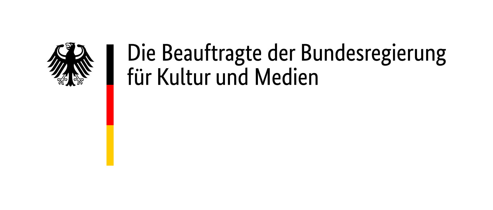
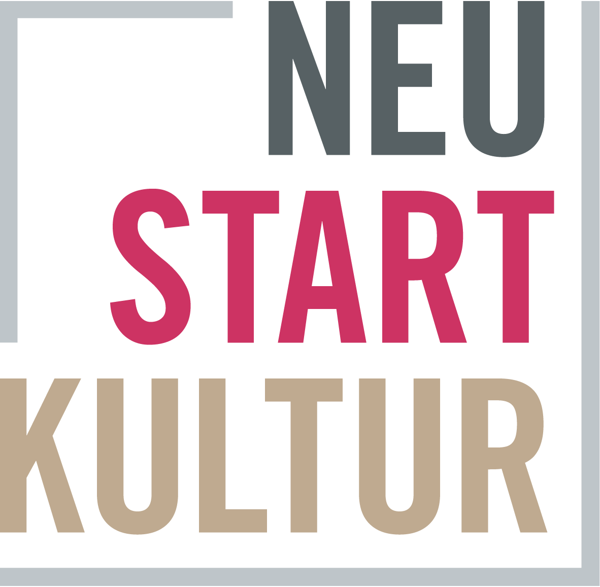
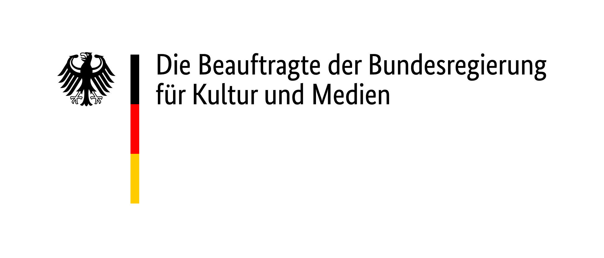
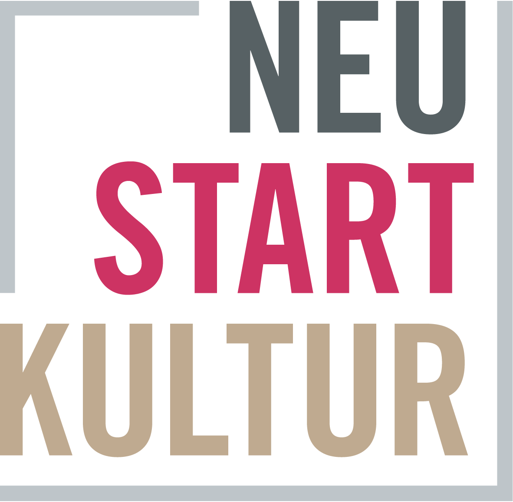

spiele zur
kunst
Die Kunstvermittlungs-App zum Kreativwerden. Editionen zu den Künstler:innen
→ Jo Enzweiler
→ Monika von Boch
→ Vera Molnár
→ Jo Enzweiler
→ Monika von Boch
→ Vera Molnár
how to:
how to: Spiele zur Kunst ist eine Web-App, mit der Kinder und Kunstbegeisterte spielerisch in die
Arbeits- und Gedankenwelt von Künstler*innen eintauchen können. Die Spiele reflektieren
künstlerische Prozesse, in dem sie dich dazu einladen, integrierte Funktionen deines Smartphones
oder Tablets, wie Touchscreen oder Kamera, auf ungewohnte Art zu nutzen. Je nach Spiel entdeckst
du deine Umgebung oder die Eigenschaften von Material. Du erfährst, welche Fragen sich
Künstler*innen stellen und welche Techniken sie einsetzen, um sich ihnen anzunähern. Du erlebst,
wieviel Spaß es macht, wenn Idee und Zufall, Wissen und Experiment aufeinandertreffen und wie sie
einander bereichern können. Wie viel Intuition und Imagination braucht es, damit aus Bildern Kunst
entsteht? Oder vielmehr: Was hat Kunst überhaupt mit Spielen zu tun? Finde es selbst heraus.
zu den apps


über how to
Einfach
loslegen
how to: bringt Kunst nahe - einfach mit Smartphone oder Tablet auf den link klicken.
Kunst
verstehen
how to: fragt, wie Künstler*innen denken, wie Kunstwerke entstehen und welche Ideen darin sichtbar werden.
Kunst
spielen
how to: lädt dazu ein, selbst zu experimentieren, die Umgebung neu zu entdecken und eigene Bilder zu schaffen.
Künstler*innen
kennenlernen
how to: stellt bisher den konkreten Künstler Jo Enzweiler und die Fotografin Monika von Boch vor. Die Edition zur Medienkünstlerin Vera Molnar ist in Vorbereitung.
veranstaltungen
11.05. | PRESSEKONFERENZ |
| zu den beiden How to-Editionen → Jo Enzweiler und → Monika von Boch. Erfahren Sie mehr über den Entstehungsprozess und den möglich Einsatz im museumspädagogischen Bereich. |
11.05. | WORKSHOP |
| zu den beiden How to-Editionen → Jo Enzweiler und → Monika von Boch. Erfahren Sie mehr über den Entstehungsprozess und den möglich Einsatz im museumspädagogischen Bereich. |
eure bilder

Gefördert durch
Die Entwicklung von How To: Monika von Boch wurde ermöglicht durch das Stipendienprogramm von
Coding da Vinci im Programm Kultur Digital
der Kulturstiftung des Bundes.
Die Umsetzung wurde gefördert von der Beauftragten der Bundesregierung für Kultur und Medien
im Rahmen des Sonderprogramms Neustart Kultur
als Förderprojekt des Programms KULTUR.GEMEINSCHAFTEN der Kulturstiftung der Länder.
 


